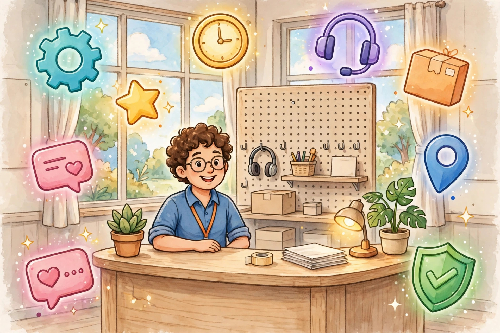

CSC থেকে কী কী সেবা দেওয়া যায়

CSC (Common Service Centre) থেকে একজন VLE নানা ধরনের ডিজিটাল সেবা দিতে পারেন। নিচে সেবার প্রধান ক্যাটাগরিগুলো দেওয়া হলো — প্রতিটার পাশে লেখা আছে কেন এই সেবা গ্রামের মানুষের দরকার, যাতে বুঝতে পারেন একটা CSC সেন্টার আসলে কত কাজের।
🪪 পরিচয় ও নথি সংক্রান্ত সেবা
- আধার সেবা — তথ্য আপডেট, প্রিন্ট ও সংশ্লিষ্ট সহায়তা। কেন জরুরি? সরকারি টাকা (DBT) আধার-লিংক ব্যাংক অ্যাকাউন্টে আসে — নাম-ঠিকানায় ভুল থাকলে টাকা আটকে যায়। তাই আধার আপডেট গ্রামের মানুষের কাছে সবচেয়ে চাহিদার সেবাগুলোর একটা।
- প্যান কার্ড — নতুন আবেদন ও সংশোধনে সাহায্য। ব্যাংক অ্যাকাউন্ট খোলা থেকে নানা কাজে প্যান লাগে — অনলাইন ফর্ম ইংরেজিতে হওয়ায় গ্রামের মানুষ একা করতে পারেন না, VLE-এর সাহায্য দরকার হয়।
- ভোটার কার্ড — আবেদন ও সংশোধনে সহায়তা। ভোটাধিকার তো আছেই, পাশাপাশি এটা একটা গুরুত্বপূর্ণ পরিচয়পত্রও।
- পাসপোর্ট — অনলাইন আবেদনে সাহায্য। বিদেশে কাজে যেতে চাওয়া যুবকদের জন্য পাসপোর্টের ফর্ম পূরণ কঠিন — এখানে VLE-এর গাইডেন্স বড় সুবিধা।
🏦 ব্যাংকিং ও আর্থিক সেবা
- ব্যাংকিং করেসপন্ডেন্ট (BC) — টাকা জমা ও তোলা। এটা সম্ভবত CSC-এর সবচেয়ে প্রভাবশালী সেবা। যেসব গ্রামে ব্যাংকের শাখা নেই, সেখানে VLE ব্যাংকের প্রতিনিধি হিসেবে কাজ করেন — গ্রাহককে আর শহরে গিয়ে লাইনে দাঁড়াতে হয় না। একজন বয়স্ক মানুষের জন্য এটা আশীর্বাদ।
- টাকা ট্রান্সফার — এক অ্যাকাউন্ট থেকে অন্য অ্যাকাউন্টে। শহরে কাজ করা শ্রমিক বাড়িতে টাকা পাঠাতে চাইলে এই সেবা কাজে লাগে — নিরাপদে, দ্রুত।
- বীমা — জীবন ও সাধারণ বীমার প্রিমিয়াম/আবেদন সহায়তা। গরিব পরিবারের জন্য বীমা মানে বিপদের দিনে ভরসা — কিন্তু ফর্মের জটিলতায় অনেকে পিছিয়ে যান। VLE সেই বাধা দূর করেন।
- পেনশন সংক্রান্ত — তথ্য ও আবেদনে সাহায্য। বয়স্ক বা বিধবা ভাতার মতো সহায়তা পেতে কাগজপত্রের ঝামেলা VLE মিটিয়ে দেন।
💡 বিল পেমেন্ট ও রিচার্জ
- মোবাইল ও DTH রিচার্জ — প্রায় প্রতিদিনের চাহিদা; দোকানে ভিড় আনার সবচেয়ে সহজ সেবা।
- বিদ্যুৎ বিল পেমেন্ট — সময়মতো বিল না দিলে জরিমানা বা লাইন কাটা; VLE-এর কাছে বিল দিলে গ্রামের মানুষ নিশ্চিন্ত।
- অন্যান্য ইউটিলিটি বিল পেমেন্ট — এক জায়গায় সব বিলের সমাধান।
এই সেবাগুলো নিয়মিত গ্রাহক তৈরি করে — যে আজ রিচার্জ করতে এলো, কাল সে-ই আধার প্রিন্টের জন্য আসবে।
🎫 টিকিট বুকিং
- রেল টিকিট — IRCTC-এর মাধ্যমে বুকিং সহায়তা। তৎকালের চাপ, ইংরেজি ওয়েবসাইট, পেমেন্টের ঝামেলা — গ্রামের মানুষের পক্ষে একা সামলানো কঠিন। VLE এই পুরো প্রক্রিয়া সহজ করে দেন।
- বাস ও বিমান টিকিট — বুকিংয়ে সাহায্য। পরিযায়ী শ্রমিকদের যাতায়াতে এই সেবার চাহিদা থাকে।
🏛️ সরকারি প্রকল্প ও ফর্ম
- বিভিন্ন সরকারি প্রকল্পের অনলাইন আবেদনে সাহায্য — এখন বেশিরভাগ প্রকল্পের আবেদন অনলাইনে হয়।
- জন্ম/মৃত্যু/আয়/জাতি সার্টিফিকেটের আবেদন সহায়তা — স্কুলে ভর্তি, চাকরি, প্রকল্প — সবখানেই এই সার্টিফিকেট লাগে।
- কৃষক, শ্রমিক ও অন্যান্য কল্যাণ প্রকল্পের ফর্ম পূরণে সাহায্য — যারা প্রকল্পের টাকা পাওয়ার যোগ্য, তারা যেন ফর্মের জটিলতায় বঞ্চিত না হন।
💡 মনে রাখুন: সেবার তালিকা সময়ে সময়ে বাড়তে থাকে — নতুন সেবা যোগ হলে Digital Seva পোর্টালেই জানা যায়। VLE হিসেবে নিয়মিত পোর্টাল চেক করুন। নতুন সেবা সবার আগে শিখে নিলে এলাকায় আপনার সুনাম বাড়বে।
🎯 VLE-দের জন্য বাস্তব টিপস
- দৈনিক ভিড়ের সেবা চিনুন: রিচার্জ, BC লেনদেন, বিল পেমেন্ট — এগুলো প্রতিদিন গ্রাহক আনে। পাসপোর্ট বা বীমার মতো সেবা মাঝে মাঝে হলেও আয় ভালো দেয়। দুটোর ভারসাম্য রাখুন।
- সেবার তালিকা দোকানে টাঙান: বড় হরফে বাংলায় লিখে বাইরে লাগান — কী কী সেবা দেন, মানুষ জানলে তবেই আসবে।
- ক্রস-সেবা দিন: যে গ্রাহক রিচার্জ করতে এলো, তাকে জিজ্ঞেস করুন আধার প্রিন্ট বা অন্য কিছু দরকার কিনা। এক গ্রাহক থেকে একাধিক সেবা — আয়ের সহজ পথ।
- নতুন সেবা শিখতে দেরি করবেন না: পোর্টালে নতুন সেবা এলে দ্রুত শিখে নিন — এলাকায় "সব কাজ হয়" সুনামই আসল পুঁজি।
❓ সাধারণ কিছু প্রশ্ন
সব CSC-তে কি সব সেবা মেলে? — সব সেন্টারে সব সেবা নাও থাকতে পারে। কোন সেবা দরকার, VLE-কে জিজ্ঞেস করে নিন।
নতুন সেবা যোগ হলে কীভাবে জানবো? — Digital Seva পোর্টালে নিয়মিত চোখ রাখুন; নতুন সেবার ঘোষণা সেখানেই আসে।
সেবার চার্জ কত? — বেশিরভাগ সেবার চার্জ সরকার নির্ধারিত। VLE-কে জিজ্ঞেস করলে তিনি নিয়মমাফিক চার্জ বলবেন।
একটা সেবার জন্য কত সময় লাগে? — সেবা অনুযায়ী আলাদা; সাধারণ রিচার্জ-বিল কয়েক মিনিটে, ফর্মের কাজে বেশি সময় লাগতে পারে।
💰 এই সেবাগুলো থেকে আয় কীভাবে?
প্রতিটি সেবা দেওয়ার বদলে VLE কমিশন পান। কমিশন সেবা অনুযায়ী আলাদা হয় — আর সঠিক হার Digital Seva পোর্টালে লগইন করে দেখা যায়। বিস্তারিত জানুন: CSC থেকে আয়: কমিশন কীভাবে কাজ করে।
🔗 অফিসিয়াল পোর্টাল (সরকারি):
- digitalseva.csc.gov.in — Digital Seva পোর্টাল
- csc.gov.in — CSC-এর মূল ওয়েবসাইট
🌐 আরও নতুন নতুন তথ্যের জন্য আমাদের ওয়েবসাইট ভিজিট করুন: aicombo90.github.io/dafadar-online-seva — ওয়েবসাইটটা মোবাইলে সেভ/বুকমার্ক করে রাখুন যাতে হারিয়ে না যায়!
💬 তাজা আপডেট সবার আগে পেতে আমাদের WhatsApp গ্রুপে যোগ দিন: WhatsApp গ্রুপে যোগ দিন
📺 ভিডিওতে দেখতে চান? আমাদের YouTube চ্যানেল সাবস্ক্রাইব করুন: youtube.com/@DafadarOnlineSeva